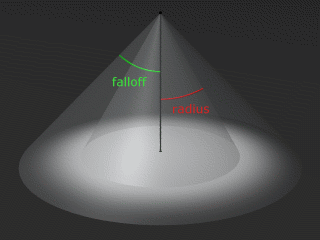

Formation POV #6: Lumières
Il existe différents types de sources lumineuses, mais aucune de ces sources n’est visible directement : on ne peut voir que des reflets.
Lumière omnidirectionnelle
light_source {<v> couleur}
La source la plus simple : on spécifie son emplacement, sa couleur, et elle émet dans toutes les directions.
Lumière conique : spotlight
light_source {<v> couleur spotlight radius r falloff f tightness t
point_at <p>}
Cette source n’est plus omnidirectionnelle : la lumière n’est émise que dans un cône donné, avec une atténuation sur les bords.
- radius est l’angle au sommet du cône où la lumière est à 100% ;
- falloff est l’angle au sommet du cône total comprenant la zone d’atténuation (donc falloff>radius) ;
- tightness règle la rapidité de l’atténuation (10 par défaut) : pour une valeur nulle l’intensité est réellement à 100% dans tout le cône principal et décroît linéairement dans le cône secondaire ; pour une valeur non nulle l’intensité n’est à 100% que sur l’axe du cône ;
- enfin point_at est un point de l’axe du cône.
Sur la figure ci-dessous on a pris tightness=0 pour que les zones apparaissent bien :
light_source {2*y, rgb 1 spotlight radius 30 falloff 45 tightness 0 point_at 0}

Note : On peut empêcher certains objets, comme le cylindre marquant l’axe du cône dans l’image ci-dessus, de bloquer la lumière, c’est-à-dire d’avoir une ombre : il suffit de rajouter le mot no_shadow avant de fermer l’accolade.
On peut également empêcher une lumière de projeter des ombres grâce au mot
shadowless (à mettre avant l’accolade fermante dans la définition de la
lumière), mais curieusement les taches lumineuses sont alors beaucoup moins
jolies.
Lumière étendue : area_light
light_source {<v> couleur area_light <l>,<h>,L,H}
Alors que les lumières précédentes produisent des ombres aux bords tranchés
car la lumière vient d’un seul point, l’area_light simule une surface
centrée en <v>, de côtés <l> et <h>. En fait cette surface est un
quadrillage de L lumières sur H.
L’effet est celui escompté mais le rendu est considérablement plus lent.
On peut rajouter le mot jitter avant de fermer l’accolade afin d’obtenir un
résultat encore meilleur.
Dans l’exemple ci-dessous l’ombre à gauche provient d’une lumière normale,
celle de droite d’une area_light :